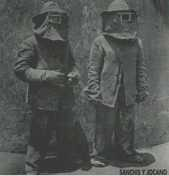
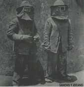

Esto es todo lo que tengo
mi vieja bolsa, alguna ropa de recambio
y los libros que me hablan de la carretera
y va la vida transcurriendo sobre los railes de este tren
quizás, chica, no debí dejar mi trabajo
quizás no debí soñar
puedo sentir el fuego bajo los pies
ahora no preocupa casi nada
no cuido a nadie, y nadie me cuida a mí
qué puedo decir de mi vieja banda de rock
puedo escribir postales de cualquier sítio de la tierra
y mandar saludos, yo estoy bién!
y los chicos saliendo de la fábrica
puedo sentir el fuego bajo mis pies
aquella chica de azul que me dió todas sus promesas
quizás esté aburrida de cuidar hijos en algún
piso alquilado
porque nací en una tierra donde te enseñan a luchar
por un trabajo donde no todos ganan
y a mí no me apeteció dejarme la piel aquí
así que dejé todo eso por cosas más dificiles
puedo sentir el fuego bajo los pies
Intérpretes
Voces: Santi Gasca y Juan Carlos Landa
Guitarras eléctricas y acústicas: Josean Gómez Pianos sintetizadores: Xulai Bajo, armónica y voces: Josean Bengoetxea Batería: Alex Zulaica
 
